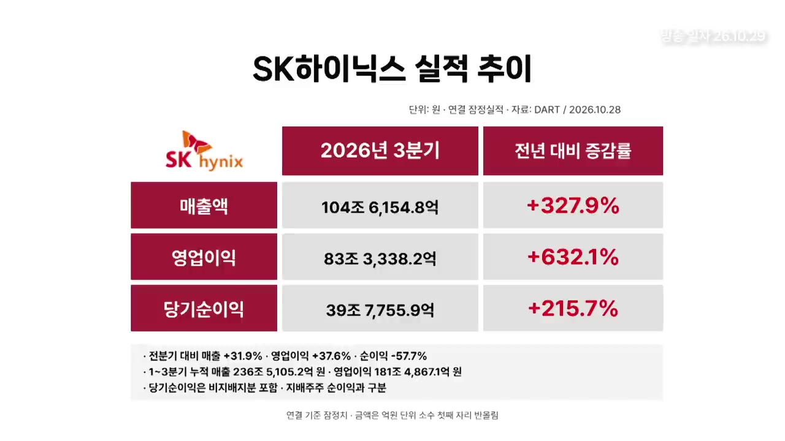
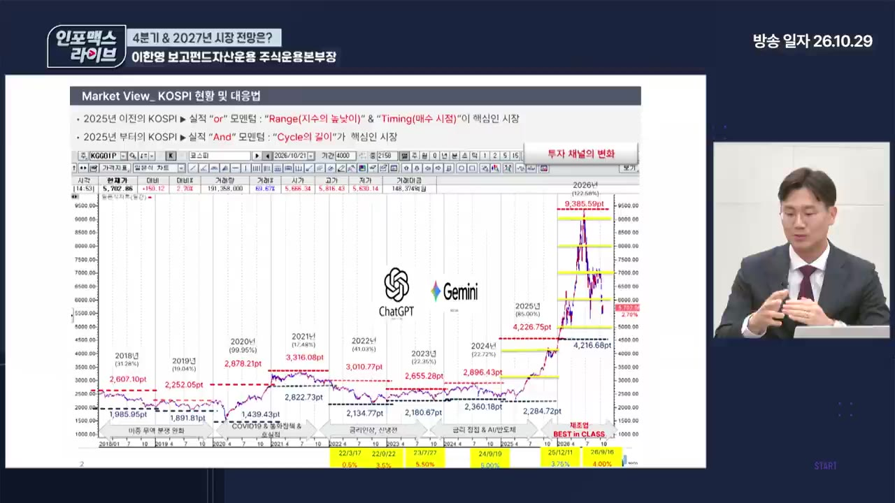
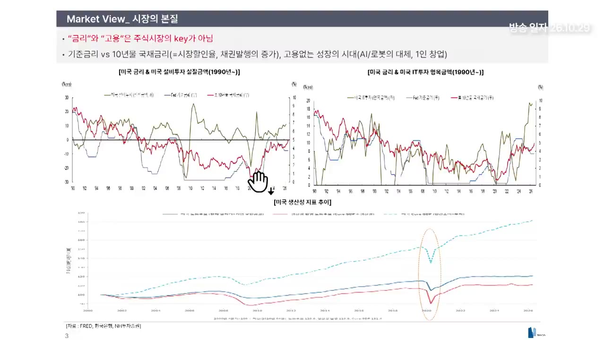
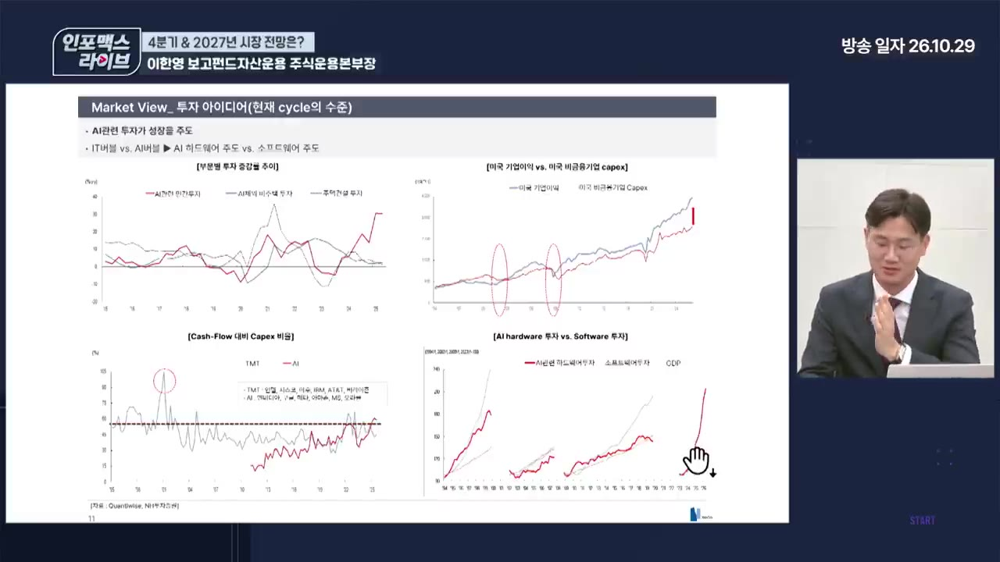
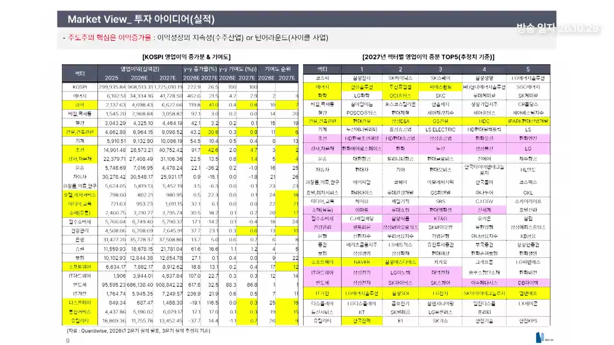
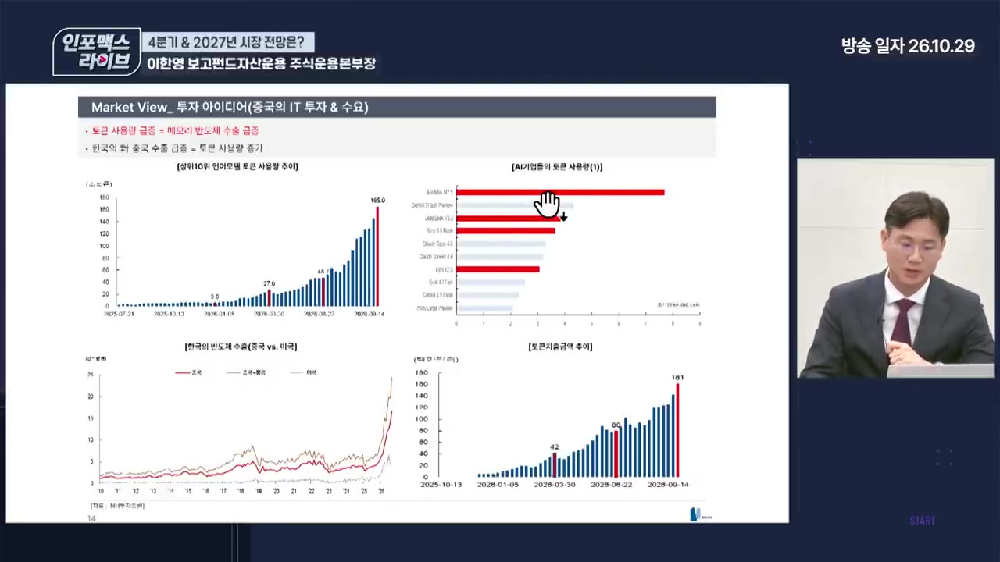
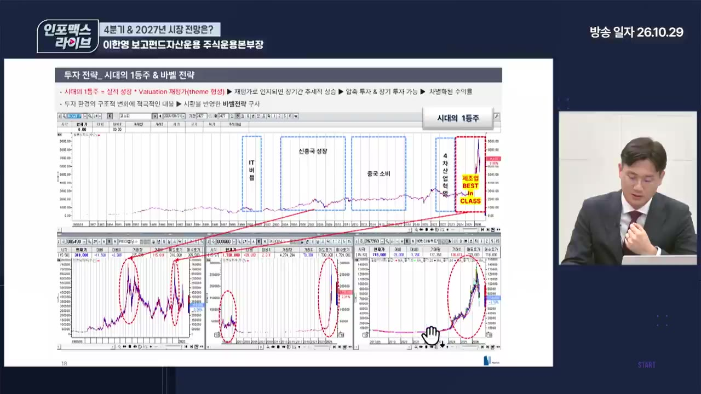

내년 1등 주도주가 보인다 (이한영) | 인포맥스라이브 2026년 10월28일 방송
▶ 원본 영상 보기한눈에 보기
- 이한영 본부장은 10월 급락을 펀더멘털 훼손이 아닌 '신뢰와 여유(시간)의 문제'로 보며, SK하이닉스 3분기 컨퍼런스콜이 그 신뢰 문제를 상당 부분 풀어 줬다고 평가합니다.
- 코스피는 5,100~5,600 구간에서 저점 테스트를 마치고 쌍바닥(W자)을 만드는 중이며, 7,000선까지는 기술적 반등이 가능하다는 것이 영상 속 주장입니다.
- 2027년은 '유가만 진정되면 골디락스'이고, 주도주는 여전히 IT이며 이번에는 삼성전자·SK하이닉스와 IT 소부장을 함께 들고 가야 한다고 말합니다.
- 비반도체에서는 생뚱맞지만 건설(정비사업·에너지 토목·중동 재건)을 공부할 섹터로 꼽고, 조선은 정통 조선보다 발전용 엔진 쪽에 주목하라고 합니다.
- 지금은 단기 매매가 아니라 '모아 가는 구간'이며, 좋은 와인을 디캔팅하듯 실적이 확인될 시간을 줘야 한다고 강조합니다.
이런 분께 도움이 됩니다
- 7월·10월 급락으로 손실을 보고 반도체 비중을 어떻게 할지 고민하는 개인 투자자
- 2027년 섹터 배분(반도체 대형주 vs 소부장, 비반도체 대안)의 큰 그림이 필요한 분
- 펀드매니저가 금리·유가·실적을 어떤 기준으로 보는지 알고 싶은 분
핵심 내용
10월 급락의 원인: 펀더멘털이 아니라 '신뢰와 여유'
- 7월 급락은 꼬였던 수급의 폭발이었고, 10월 하락은 '실적을 믿을 수 있느냐'는 신뢰의 문제였다는 진단입니다. (2:22)
- 회사가 말하는 장기 공급 계약(LTA, 몇 년치 물량·가격을 미리 묶는 계약)을 공시·계약서로 확인할 수 없어 시장이 회사 말만 믿어야 하는 상황이었음.
- 반등이 나와야 할 날들에 추석·징검다리 연휴가 겹치고, 연휴 뒤엔 실적 시즌 관망이 이어져 '좋은데 왜 빠지지'가 설명되지 않았음.
- AI 쪽 코어위브 사태 등 악재가 누적돼 거래량이 적은 상태에서 매도만 나와 밀림.
- 7월부터 "V자 반등은 안 나오고 저점을 다지며 올라갈 것"이라고 봤다고 밝힙니다.
- 투자 기준(기승전 AI에서 파생되는 제조업 사이클)이 바뀌지 않았는데 가격이 빠졌다는 이유만으로 본전 심리에 파는 건 맞지 않다는 입장입니다. (19:26)
💡 데이터는 다른 방향을 말하는데 마음이 흔들린 것 — 시장이 끝난 게 아니라 확인할 시간이 필요했을 뿐이라는 주장.
SK하이닉스 3분기 컨퍼런스콜: "안 믿을 수 없는 실적"
- 실적이 컨센서스를 모두 넘겼고, 지금까지 들은 컨퍼런스콜 중 가장 깔끔했다고 평가합니다. (4:17)
- 대표이사가 직접 나와 수요 우려·주주친화 정책·로드맵 질문에 모두 답함.
- 주주환원 규모가 서프라이즈였다는 설명입니다.
- 시장은 연간 약 80조를 예상했는데 100조 수준이 나옴 — 키옥시아 매각 차익을 감안해도 20조는 서프라이즈라고 표현(무엇의 연간 규모인지는 자막상 불분명).
- "분기마다 자사주 매입 들어간다"는 말이 나오자 장중 코스피 외국인 순매도 약 -1,300억이 바로 매수로 바뀜. (5:25)
- 수요 흔들림에 대한 경영진 답변이 가장 좋았다고 꼽습니다.
- 초기엔 데이터센터 수요뿐이었으나 지금은 정부·로봇 등으로 수요처가 다양해져, 한쪽이 줄어도 다른 곳에서 메워진다.
- 2029년까지 물량이 솔드아웃(sold out)이고, 장기 공급 계약은 추가 연장 단계로 가고 있으며 "하단은 막혀 있고 상방은 열려 있다".
- 고객사 일부가 돈을 못 번다는 우려에는 "수익 창출 구간에 진입하고 있다"고 답함.
- 빅크로스(자막상 표현, 가격 관련 지표로 보임) 25% 가이던스만 반영해도 영업이익이 현재 83조에서 100조를 넘는다는 계산을 제시합니다.

LTA(장기 공급 계약)가 AI 공급망 전체로 번진다
- 반도체 5년 계약 → 추가 연장, 여기에 중국 기업들이 한국 반도체에 10년짜리 LTA를 요구했다는 기사까지 나왔다고 말합니다. (7:21)
- LTA는 반도체에서 기판(삼성전기 컨퍼런스콜에서도 같은 얘기), 변압기, 발전 엔진 업체까지 확산 중이라는 주장입니다.
- 계약 공시가 안 나오는 이유: 모든 산업이 공급 부족(쇼티지)이라 발주처가 비밀 유지를 원하고, 공시를 해도 "미국 데이터센터 기업"처럼 고객명을 적지 않음.
- 내년부터는 전체 물량의 50~60%가 LTA로 묶인 제품 믹스로 들어온다고 봅니다. (10:04)
- 높은 영업이익률이 안정적으로 유지되는 것을 보여주면 노이즈는 사라질 것이라는 논리.
- 지금 밸류에이션은 모든 노이즈를 다 반영한 수준이라는 입장입니다 — PER 밴드 하단이 약 10배인데 4배까지 빠졌고, 이는 내년 순이익을 400조로 잡는 셈이어서 수출 증가율이 60% 이상 빠져야 말이 되는 수준(대상이 시장 전체인지 반도체인지 자막상 불분명).
코스피 저점과 반등 목표: 5,500 지지, 7,000 저항
- 저점 테스트 구간은 5,100~5,600, 기준선은 5,500으로 제시합니다. (12:47)
| 기준 | 수치 |
|---|---|
| 7월 급락 장중 저점 | 5,260 |
| 7월 종가 기준 저점 | 5,600 |
| 포워드 PBR 1배 | 5,100 |
| 고점(6월) | 9,300 |
- 7월과 지금의 차이는 두 가지라고 설명합니다.
- 그 사이 2분기 실적이 좋았음을 확인했고 3분기도 좋게 시작함.
- 7월엔 레버리지 ETF 물량이 많았지만 지금은 더 팔 자금이 거의 없음.
- 반등이 6,000을 넘어서면서 쌍바닥(W자) 형태가 나온다고 봅니다. (14:45)
- 7,000~7,500에 매물대가 몰려 있고, 이를 뚫으면 8,300까지는 매물이 얇아 빠르게 갈 수 있다는 분석입니다.
- 5,500~7,000은 지수 기준 약 27% 폭이라, 신고가를 못 가고 박스권에 갇혀도 20%대 사이클을 한두 번 돌면 올해 수익률은 충분하다고 말합니다.

남은 변수: 미국 선거와 중동 = 결국 유가
- 남은 과제는 11월 3일 미국 선거와 중동 리스크이며, 다른 말로 하면 "유가 하나 남은 것"이라고 정리합니다. (17:07)
- 선거 뒤 실제 타격이 있더라도 확정되면 오히려 불확실성 해소일 수 있다는 시각입니다.
- 트럼프 1기 때처럼 의회가 갈려도 대통령령으로 밀어붙이는 패턴은 같을 것으로 봄.
- 그래도 이 정도 반등은 충분히 누려야 한다고 말합니다.
펀드매니저들은 어떻게 대응했나
- 하루 -7%로 시작하는 장이라 현금을 크게 확보할 틈이 없었고, 그런 운용사는 거의 없다고 말합니다. (20:37)
- 보고펀드는 롱바이어스(매수 위주) 하우스라 현금 10%대 중반을 들고 있었고, 제시한 가격대에서는 "신앙으로 사는 느낌"으로 모았다고 합니다.
- 운용사는 두 부류로 갈렸을 것이라는 추정입니다.
- 삼성전자·SK하이닉스 비중을 유지하며 반등을 기다린 쪽
- 두 종목을 트레이딩하며 주변 섹터로 분산한 쪽
- 실적 시즌 변동성이 마지막 변동성이라 분할 매수 중이었다고 합니다. 예: LG이노텍이 실적 쇼크로 -10% 출발했다가 -1%로 마감 — 매수가 들어온 것. (22:12)
- 정상적으로 대응한 펀드라면 이번 반등에서 7% 중반~8% 수익이 났을 것이라고 말합니다.
2027년 전망: 유가만 진정되면 골디락스
- 10월 고객 레터 제목이 "유가만 완화되면 골디락스(성장은 좋고 물가는 안정된 상태)"였다고 소개합니다. (23:22)
- 심리적 안정 기준은 다음과 같이 제시합니다.
- 금리: 미국 10년물 국채 금리 앞자리가 5→4
- 유가: 100달러보다 80~90달러 언저리, 90달러를 깨고 내려오면 가장 좋음
- 금리에 너무 민감할 필요 없다는 근거입니다.
- 미국 10년물 금리와 미국 실질 설비투자가 2020년 이후 완벽하게 동행 — GPT 상용화(2022년 11월), 제미나이 상용화(2023년 11월) 이후의 투자 사이클 때문에 금리가 오른 것으로 해석. (24:08)

- 미국 금리는 몇 년째 4~5% 레인지라 5.0이냐 5.3이냐는 큰 의미가 없음. 합리적 범위는 4.8~5.0으로 봄.
- 채권을 계속 찍어내는 사이클이라 금리가 크게 빠지지 않을 것.
- B2C가 아닌 B2B 사이클 — 일론 머스크 말처럼 조달금리가 8~10%라도 ROI 30%를 내면 감당 가능하다는 논리.
- 호르무즈 통과 물동량은 전쟁 이전의 90% 이상 회복됐지만 운임이 올라 유가가 안 빠지는 상황이라고 설명합니다.
AI 하드웨어 사이클은 길다
- 과거 하드웨어 투자 사이클(1994년, 2000년, 2010년대)은 1~2년에 끝난 적이 없다는 차트를 보여줍니다. (28:22)

- 데이터센터 하나 짓는 데 보통 5년이 걸리는데 지금 사이클은 2~3년차이므로 하드웨어 사이클은 많이 남았다는 판단입니다.
- 다음 수요처가 대기 중이라는 주장입니다.
- 아직 민간 데이터센터만 짓는 중이고 정부(소버린 AI)는 시작도 못 함 — 앞에서 이미 쇼티지가 나서.
- 그 뒤로 자율주행·로봇·우주가 대기.
2027년 이익: 반도체가 여전히 1·2등, 성장률 게임으로 바뀐다
- 코스피 이익 증가율은 올해 220% → 내년 26%로 눕지만, 이 26%도 전 세계 최상위라고 말합니다. (30:19)
- 2분기까지 확정치 + 3분기 프리뷰 반영 추정치(지난주 종가 기준).
- 반도체 내년 이익 증가율 추정은 30% 초중반이지만, 이번 실적을 반영하면 40~50%는 나와야 한다는 의견입니다.
- 2027년 영업이익 증가 기여도 1등 삼성전자, 2등 SK하이닉스는 바뀌지 않는다고 단언합니다. (31:04)
- 시장 성장률이 낮아지면 그보다 높게 성장하는 종목의 수익률이 좋아지는 '그로스 게임'이 된다는 설명입니다.
- 화학: 이익 증가 기여도 0.4 → 0.8 전망. 다만 정통 화학은 맞추기 어려우니 보지 말고, 에너지·화학 안의 신재생(한화솔루션, OCI홀딩스 등으로 보임 — 자막상 불분명) 쪽 실적 반등에 주목.
- 태양광: 12월 4일부터 미국 섹션 232 규제가 시작되면 폴리실리콘을 16달러 → 21달러에 팔아야 해 실적 성장 기대.
- 반도체 안에서도 이수페타시스, DB 계열 등이 이번 실적 바닥을 찍고 올라오는 종목으로 잡힘.

투자 판단 프레임: 바텀업 → IT → 대형주+소부장 함께
🔁 2027년 종목 선택 순서 (영상 속 주장)
- 바텀업 선택
- IT 섹터
- 대형주+소부장
- 1바텀업 선택
탑다운(매크로)과 바텀업(개별 기업) 중 이제는 바텀업을 봐야 한다 (33:21)
- 2IT 섹터
이번 시장의 시작이 IT였으니 IT가 끝나야 시장이 끝난다. 이 사이클에 편승한다
- 3대형주+소부장
삼성전자·SK하이닉스와 IT 소부장을 둘 다 산다 (33:44)
- 삼성전자·SK하이닉스: 이익률은 다소 눕지만 분기 실적을 보여 주며 밸류에이션 재평가를 받는 사이클 → 기본값(디폴트)으로 보유
- IT 소부장: 이번 분기부터 전 분기 대비 50~100% 성장 사이클이 후행적으로 시작
- 다만 소부장은 시총 한계가 있어 커진 시장 자금을 다 소화할 수 없음
- 작년~올해 6월까지는 삼성전자·SK하이닉스 둘 중 하나가 압도적이었지만, 이제는 섞어 주는 사이클이라는 정리입니다.
- 시장의 주제는 바뀌지 않았다는 결론입니다.
💡 대장주는 '재평가', 소부장은 '실적 성장' — 이유가 달라서 둘 다 들고 가야 한다.
조선: 실적은 좋지만 모멘텀이 약하다 → 엔진에 주목
- 2027년 영업이익 증가 기여도 2위가 조선이지만 주가가 부진한 이유를 이렇게 설명합니다. (35:43)
- 중국 LNG선 수주가 늘면서 '중국 조선 롱·한국 조선 숏' 페어 트레이딩이 걸림.
- 환율 하락 시 수출 제조업의 환영향이 크다는 것이 확인됨.
- 기대했던 군함 발주가 계속 안 나옴.
- 수주 산업이라 실적은 무조건 좋겠지만, 주가에는 모멘텀이 필요하다고 봅니다.
- 현대마린엔진(자막상 표현, HD현대마린엔진으로 보임)이 유일하게 서프라이즈를 냈고, 가스터빈 등 발전 수요로 인한 발전 엔진 쇼티지 쪽으로 포커스를 맞추라고 말합니다. (36:52)
- 표에서 노란색은 '올해는 별로였지만 내년 확실히 좋아지는 섹터', 분홍색은 '올해 좋았고 계속 좋을 섹터'라고 설명합니다.
비반도체 새 섹터: 생뚱맞지만 건설
- 특정 섹터가 반전하려면 큰 주제가 서야 하는데, 건설에 그 주제가 설 수 있다는 주장입니다. (38:00)
- 근거는 네 가지입니다.
| 근거 | 내용 |
|---|---|
| 정비사업 | 오랜만의 정비 사이클. 한남동 → 압구정 → 여의도 → 목동 순으로 약 3년 내 본격화. 초대단지·부촌·대기업 브랜드 |
| 토목 | 에너지 고속도로 같은 토목 사업 시작, 데이터센터·발전소 플랜트가 붙음 |
| 원전 | 해외 원전 발주 — 붙으면 '옵션' |
| 중동 재건 | 전쟁이 끝나면 건설사들이 가장 많이 공사했던 중동에서 재건 수요 |
- 밸류에이션이 매우 싸고 수급이 비어 있다고 평가합니다.
- 숫자는 당장 좋지 않다고 인정합니다 — 수주가 들어와야 내년·내후년 좋아짐. 다만 수주 산업은 수주가 나오기 시작하면 주가가 먼저 움직인다는 논리입니다.
- 이익 증가 기여도는 0.3 → 0.8로 오르는 추정.
- 과거와 달라진 점: 해외 저가 수주를 하지 않고, 마진이 안 맞으면 드랍해 이익이 나는 구조라고 말합니다. (41:56)
- 종목 기준은 '정비사업을 잘하면서 해외 수주도 잘 받는 기업'이라고 제시합니다.
- 건설·화학·정유는 연초에 희망 섞인 추정치가 나왔다가 깎이는 특성이 있어, 탐방하며 계속 확인해야 한다고 덧붙입니다.
- 그 밖에 건설·조선·태양광·풍력은 한국 기업이 가장 잘하는 정통 제조업이고, 2차전지는 본업이 아닌 ESS(에너지 저장 장치)로 실적이 턴하는 중이라고 봅니다.
- 이익 변동성에 민감하다면 IT 비중을 높게 가져가는 게 맞고, 많이 빠진 상태에서 탄력이 가장 좋은 쪽도 IT라는 의견입니다.
실적이 쌓이면 밸류에이션이 바뀐다
- 4분기에 지수가 오가며 시간이 흘러도 1월 실적 발표에서 숫자가 나오면, 여러 분기 실적이 쌓이며 PBR이 아닌 PER로 다시 평가받을 것이라는 주장입니다. (44:39)
- 엔비디아도 크게 오르지 않더라도 높은 영업이익률을 유지해 높은 밸류를 받음.
- AI 수요 근거로 상위 10개 언어 모델 토큰 사용량을 제시합니다. (46:13)

- 2025년 말 5.6조 → 2026년 3월 말 27조 → 6월 말 46조 → 9월 말 165조, 9개월 만에 30배.
- 3월부터 상위 10개 중 4개가 미니맥스·딥시크·스텝 등 중국 모델로 잡힘.
- 5월부터 한국 반도체 중국향 수출이 미국향을 제치며 급증 — 같은 구간.
- 범용 제품 비중이 큰 삼성전자의 실적이 분기마다 더 좋아질 것이고, SK하이닉스는 ROE를 높이는 쪽, 삼성전자는 실적을 키우는 쪽으로 방향이 다르다고 말합니다.
- 사례: 현대일렉트릭은 2022~2023년 흑자 전환을 시장이 안 믿었지만, 3개 분기 연속 흑자 뒤 데이터센터 사이클과 맞물려 5년간 PBR 0.4배에서 PER 40배까지 갔다고 설명합니다. (48:35)

개인 투자자에게: 지금은 모아 가는 구간
- 좋은 와인을 샀는데 맛을 모르겠으면 버리지 않고 디캔팅하듯, 지금은 시간을 주는 구간이라는 비유를 듭니다. (49:47)
- 5월 말~7월 초에 들어온 투자자는 타격이 가장 크지만, 여기까지 버텼다면 여유가 될 때 보유 단가를 낮춰 놓고 수익이 나면 챙겨 나가는 선순환으로 바꾸라고 권합니다. (50:36)
- 지수 9,000대에서도 샀는데 이 가격에서 못 산다면 주식을 하지 말아야 한다는 강한 표현도 나옵니다.
- 레버리지를 썼다면 7월·10월 두 번의 타격으로 남은 게 없었을 것이라고 경고합니다.
- 한국 증시는 이익 성장률과 ROE 모두 최상위라 내년에도 상승률 상위권이 충분히 가능하다고 봅니다. (52:56)
💡 오늘 사서 내일 먹는 게임이 아니다 — 안개가 걷히면 좋은 숫자가 보이기 시작할 것이라는 주장.
기억할 숫자·인용
- 코스피 저점 테스트 구간: 5,100(포워드 PBR 1배)~5,600, 기준선 5,500 / 7월 장중 저점 5,260
- 저항: 7,000~7,500 매물대, 돌파 시 8,300까지 / 6월 고점 9,300
- 5,500~7,000 박스권 폭: 약 27%
- 내년 LTA 비중: 전체 물량의 50~60%
- SK하이닉스: 2029년까지 솔드아웃, 장중 외국인 -1,300억 → 매수 전환
- 코스피 이익 증가율: 올해 220% → 내년 26%, 반도체 내년 30% 초중반(→ 40~50% 기대)
- 토큰 사용량: 5.6조 → 165조(9개월간 30배)
- 금리·유가 안정 기준: 미국 10년물 4%대, 유가 80~90달러(90달러 아래면 최선)
- 폴리실리콘: 16달러 → 21달러(12월 4일 미국 섹션 232)
- 현대일렉트릭: PBR 0.4배 → PER 40배(5년)
- "7월은 꼬였던 수급의 폭발, 10월은 신뢰의 문제였다."
- "와인 맛을 모르겠으면 버리지 않고 디캔팅한다. 지금이 그 구간이다."
생각해볼 점
- (영상 내용) 출연자는 롱바이어스 운용사의 본부장으로, 고객 레터에서도 저점 매수를 권해 온 입장입니다. (내 의견) 매수 관점에 기운 시각일 수 있으니 반대 시나리오(LTA 효과가 기대에 못 미치거나 AI 투자 둔화)도 함께 점검할 필요가 있습니다.
- (영상 내용) LTA 계약은 비밀 유지로 공시되지 않아 회사 발언에 의존한다고 스스로 인정합니다. (내 의견) "믿어야 한다"는 논리는 결국 다음 분기 실적·영업이익률로 검증해야 하며, 삼성전자 실적 등 후속 숫자를 확인하는 게 우선입니다.
- (영상 내용) 건설은 "될 수도, 안 될 수도 있다"며 공부할 대상으로 제시했고 당장 숫자는 좋지 않다고 했습니다. (내 의견) 정비사업 일정·해외 수주는 정책·금리 영향이 커서 테마성 급등락 위험을 감안해야 합니다.
바로 해볼 일
- 내 계좌의 반도체 대형주와 IT 소부장 비중을 확인하고, 둘 중 하나에만 몰려 있는지 점검하기
- 삼성전자 3분기 컨퍼런스콜(영상 기준 다음 날)에서 LTA·수요·주주환원 발언이 하이닉스와 같은 방향인지 확인하기
- 미국 10년물 금리(4%대 진입 여부)와 유가(90달러 하회 여부)를 관심 지표로 등록해 두기